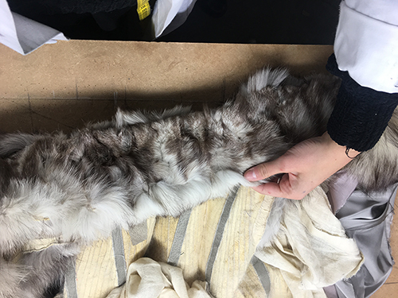
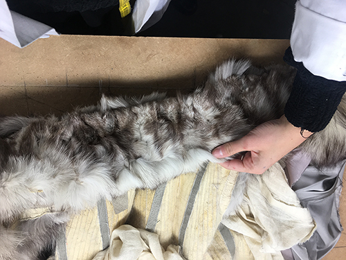

Learning to use fur knife


 



I have been working with a photographer who wanted a new website. She was using a platform which she was not happy with and I recommended to use Wordpress. She thought it wa a good idea because of the benefits and the easy use of Wordpress. Also it worked out cheaper for her. Check out the website I made for her here.
To transfer her existing domain I had to get autherisation code from her the previous platform she was using for her old website and request a swap from wordress. I took about one week for her domain do be activ on her new wordress website.
It took a little bit of time to get familiar with the way wordpress admin works. Watching tutorials on youtube has helped me a lot in figuring out things that I did not know by myself. Also the business plan allowed me to chat with wordpress developers, and I just had to tell them what I was stuck with and they told me what to do exacly. For example I founf out that I can not include full width images to all pages, only to the ones with the theme of 'homepage'.

Since she is a photographer, I had to consider very carefully what theme to choose for her website. She has sent me some websites that insipre her, and it helped me to look for something similar. Then I showed her the ones I thought would suit her needs the most and let her pick the one she liked best. It is a theme that has a portfolio page option which allows her to showcase clearly and beautifully her photoshoots.

I have completed the Wesbos CSS grid online shortcourse to learn how to use CSS grid. It consists of 25 modules each 5-30 minutes long. Each module has the completed version as well as the uncompleted. He talked through each module and meanwhile I completed them. I have learnet many new things about CSS and cases where it might more appropriate to use flex box instead. One of the most important things I have learned is to use grid template column attribute.
I have purchased this book to give my learning a structure, as I am self thought, it is important that I learn the fundamentals first, instead trying to learn something complicated. This book is really helpful because it builds up on each chapter therefore everything makes sense and helps me to learn quicker in less time. I also love how this book explains everything with images as well.
This is an example of a table I have learned to do from the book. What I would like to learn more about and practice is to make a form from scratch.

As part of my internship I started developing a fur bear customisation application. This is the first mock up version for phone. I have done this in just a few hours to be able to show how it would work. The next step was to make a desktop version and expand the choices.
This is the first desktop version of the user interfaces of the application. This needed to be extended and more options to be added.

This is the second desktop version of the User interface mockup of the application.
The enxt question was how to integrate this to the existing website. I was not sure what are the restrictions of her existing theme, but suggested to add custome code to a new blank page on her website. I consulted with her web developer and found out that they are going to make her a new online shop with a different platform called Magento where this is possible with a plug in so it was not necessary for me the write the code for the application, however it could still be a project.